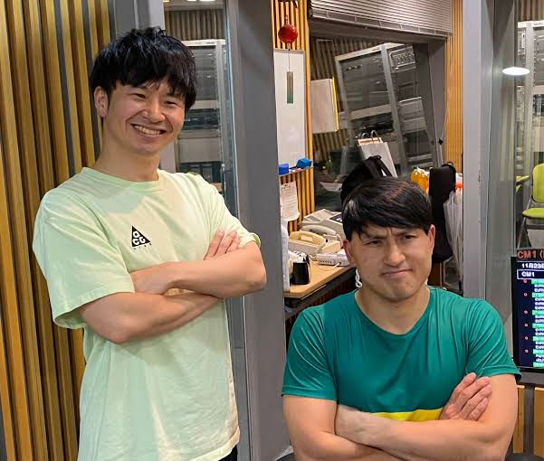
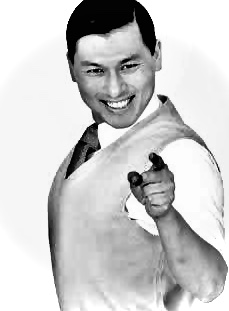
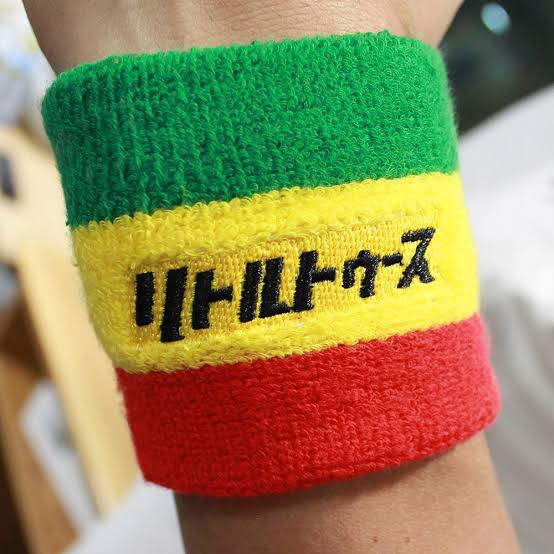

オードリーのオールナイトニッポン

放送時間
毎週土曜日 深夜1:00~3:00
出演
若林正恭(オードリー)
春日俊彰(オードリー)
Toooth!!!

Members
芸人:若林正恭
お笑い芸人。様々な分野で大活躍し、一部の人間からは若様の愛称で崇拝されている。多数のテレビ番組で活躍し、2020年上半期TV出演ランキングでは2位に入る躍進を見せた。
芸人:春日俊彰
お笑い以外できる天才人間。2019年の春にスキャンダルでお茶の間を濁しながらも結婚した。翌年には娘が誕生しダディガへと進化、人間の心を取り戻した。
放送作家:佐藤満春
オードリーと同じくケイダッシュステージに所属するどきどきキャンプというお笑い芸人でもありながら、ANNKWでは放送作家として活躍している。また「スッキリ」の構成作家も務める。
Live
1万2千人を動員した『オードリーのオールナイトニッポン 10周年全国ツアー in 日本武道館』を収録。
SHOP

ラスタカラーのリストバンドをなどリトルトゥースならぜひとも持っておきたいグッズがたくさん！
SHOPへ